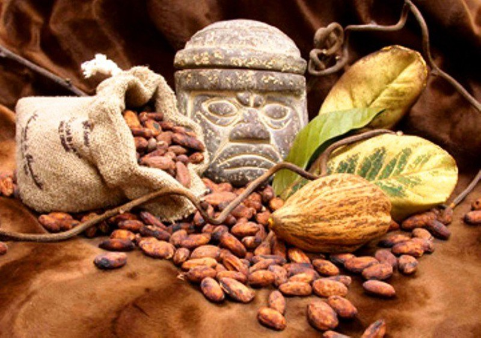
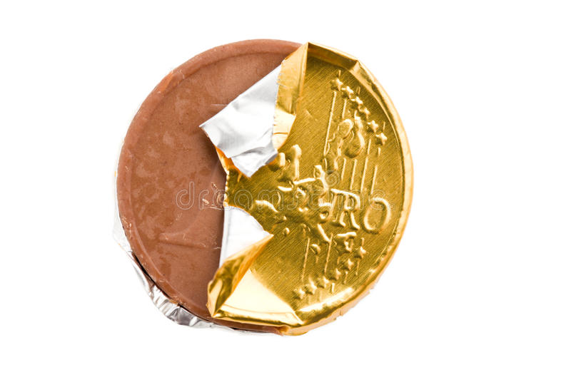
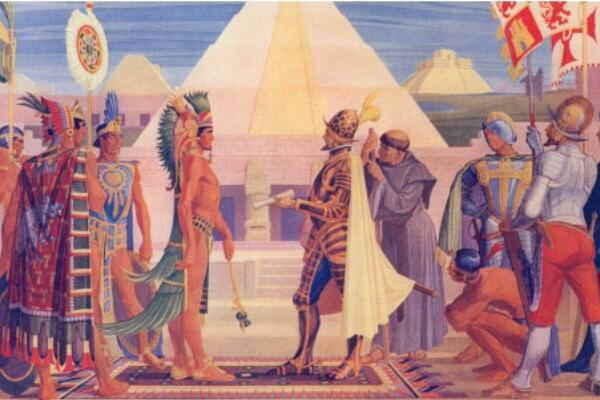
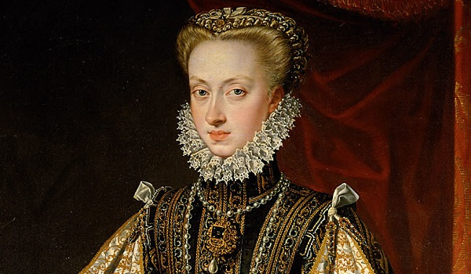
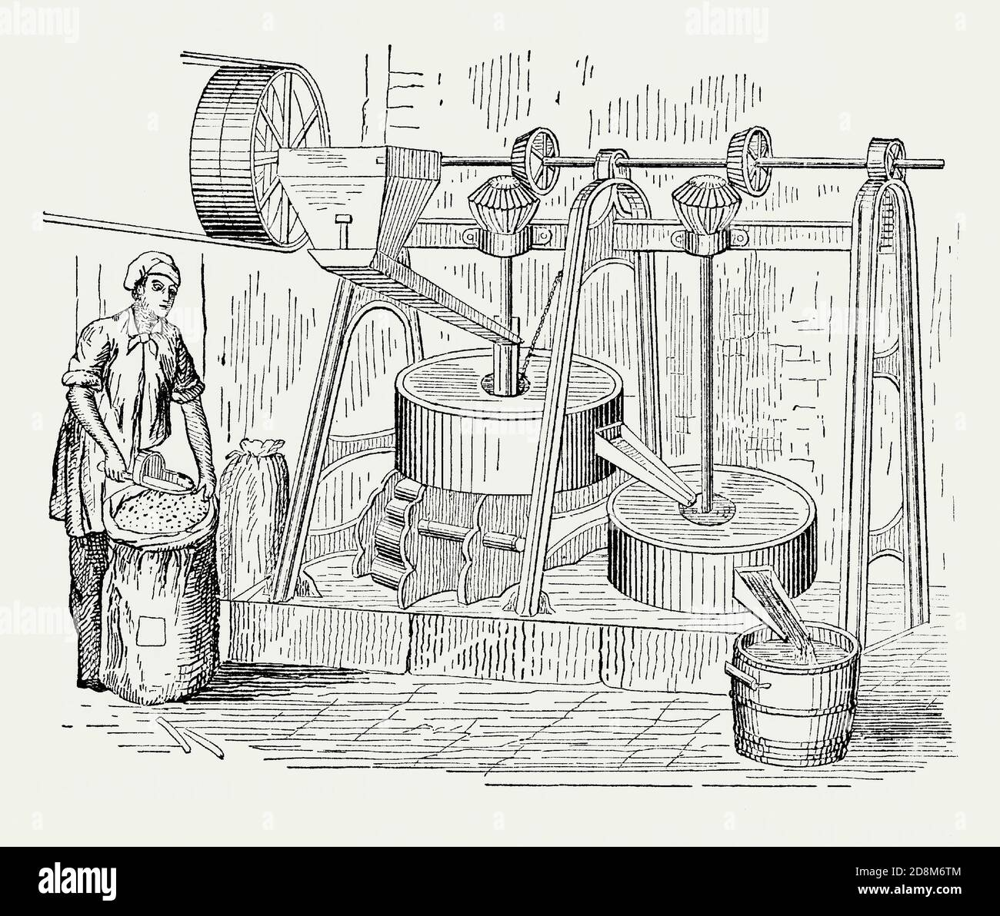

|  |
The origin of chocolate: "food of the gods" Chocolate has its origin in Mexico, where the god Quetzalcoatl gave, according to legend, the cocoa tree to men, which years later would be baptized with the scientific name Theobroma Cacao, which means "food of the gods" in Greek. |
| Cocoa was a food of great importance in Aztec society and was also used as currency. They drank it liquid and mixed with spices. The result was a very energetic, dark, thick and foamy drink which they called "tchocolatl", a name that differs little from our "chocolate". |
 |
|  |
The gateway: SpainThe story goes that when Hernán Cortés landed on the coast of Mexico in 1519, the Aztecs, led by Emperor Moctezuma II, believed that he was the reincarnation of the god Quetzacoatl and entertained him by offering him "tchocolatl". Hernán Cortés discovered chocolate in this way and from 1520 religious who traveled with him introduced this drink, now sweetened and hot, in Spain. |
| Chocolate seduced the Spanish infanta Ana de Austria who, when she married the King of France, Louis XIII, in 1615, brought her sweet custom to the French court, thus establishing chocolate strongly in the Spanish and French courts, and thus spreading throughout the old continent. |
 |
|  |
The first mechanical production of chocolate dates back to Barcelona in 1777, with a machine considered the beginning of the end of its artisanal production and consequently the beginning of the "industrial revolution" for this product. |